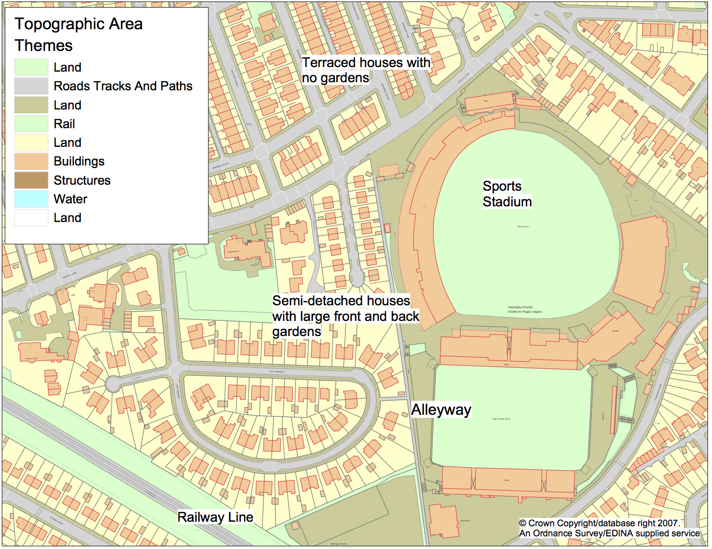
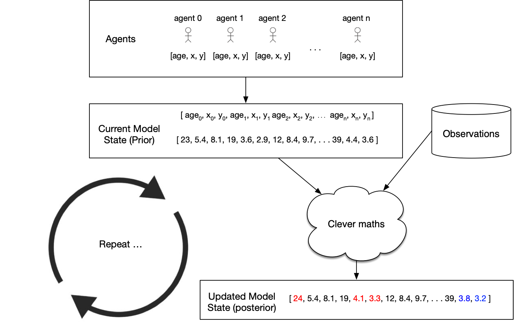
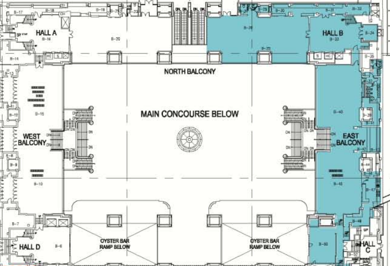
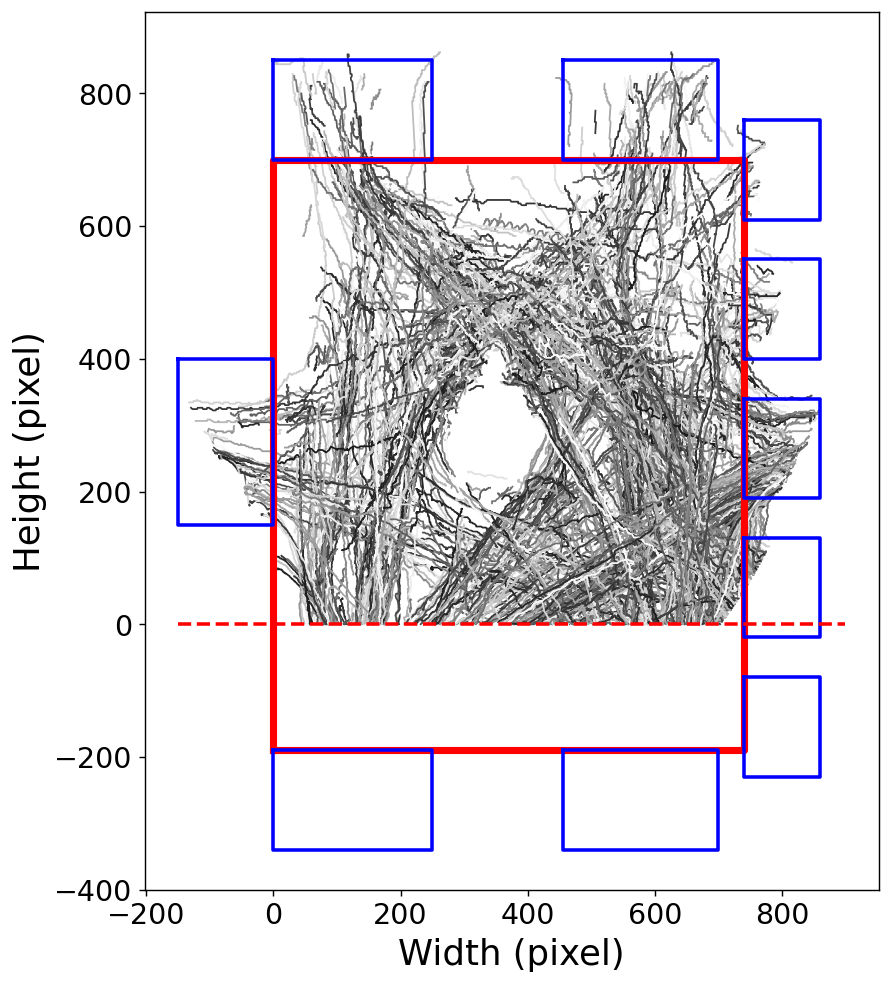
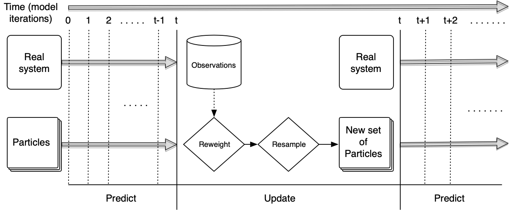

Presentation to the Government Operational Research Service
Real-time Agent-Based Modelling with Data Assimilation
Nick Malleson
University of Leeds, UK
n.s.malleson@leeds.ac.uk
dust.leeds.ac.uk
Slides available at:
www.nickmalleson.co.uk/presentations.html
Overview
Introduction to ABM
Divergence and Data Assimilation
Case Studies
Pedestrian crowding in busy public places
International policy diffusion
The dynamics of household wealth distributions
Discussion
Introduction to ABM
Aggregate v.s. Individual
'Traditional' modelling methods work at an aggregate level, from the top-down
E.g. Regression, spatial interaction modelling, location-allocation, etc.
Aggregate models work very well in some situations
Homogeneous individuals
Interactions not important
Very large systems (e.g. pressure-volume gas relationship)
Introduction to ABM
Aggregate v.s. Individual
But they miss some important things:
Low-level dynamics, i.e. “smoothing out” (Batty, 2005)
Interactions and emergence
Individual heterogeneity
Unsuitable for modelling complex systems
Introduction to ABM
Systems are driven by individuals
Bottom-up modelling
An alternative approach to modelling
Rather than controlling from the top, try to represent the individuals
Account for system behaviour directly
Autonomous, interacting agents
Represent individuals or groups
Situated in a virtual environment

Attribution: JBrew (CC BY-SA 2.0).
Why ABM?
Emergence
"The whole is greater than the sum of its parts." (Aristotle?)
Simple rules → complex outcomes
E.g. who plans the air-conditioning in termite mounds?
Hard to anticipate, and cannot be deduced from analysis of an individual
ABM uses simulation to (try to) understand how macro-level patterns emerge from micro-level behaviours
Why ABM?
Better Representations of Theory
Example: Crime theories emphasise importance of ...
Individual behaviour (offenders, victims, guardians)
Individual geographical awareness
Environmental backcloth
Why ABM?
Better Representations of Space
Micro-level environment is very important
Can richly define the space that agents inhabit
More Natural Description of a System
Describe the entities directly, rather than using aggregate equations
Why ABM?
History of the Model Evolution
Rather than returning a single result, the model evolves
The evolution itself can be interesting
Analyse why certain events occurred
Modelling agent behaviours
Many behaviours are hard / impossible to model
Choose those that are the most important. Cannot include everything!
Some can be very simple - e.g. threshold-based rules (Kennedy, 2012)
IF hunger IS ABOVE hunger_threshold THEN search_for_food
OTHERWISE do_something_else
These are the most common (Birks et al. 2012, 2013; Dray et al. 2008; Groff 2007a,b; Hayslett-McCall, 2008)
More advanced cognitive frameworks exist
Beliefs, Desires, Intentions (Bratman et al., 1988)
PECS (Schmidt, 2000).
ABM Example
Individual awareness spaces
Agent-Based Modelling - Difficulties
(actually he played with his trains...)
Tendency towards minimal behavioural complexity
Stochasticity
Computationally expensive (not amenable to optimisation)
Complicated agent decisions, lots of decisions, multiple model runs
Modelling "soft" human factors
Need detailed, high-resolution, individual-level data
Individual-level data
Data Assimilation for Agent-Based Modelling
Thanks
Josie McCulloch, Alison Heppenstall, Keiran Suchak, Minh Kieu, Molly Asher, Kevin Minors, Andrew West, Dan Tang, Yannick Oswald, Robert Clay, Annabel Whipp, Jon Ward, Thomas Crols
Why we need Data Assimilation
Complex models will always diverge
(due to inherent uncertainties in inputs, parameter values, model structure, etc.)
Possible Solution: Data Assimilation
Used in meteorology and hydrology to bring models closer to reality. Combines:
Noisy, real-world observations
Model estimates of the system state
Data assimilation v.s. calibration

Challenges for using DA with ABMs
Model size
10,000 agents * 5 variables = 50,000 distinct parameters
Agent behaviour
Agent's have goals, needs, etc., so can't be arbitrarily adjusted
Assumptions and parameter types
Maths typically developed for continuous parameters and assume normal distributions
Categorical parameters can be a big problem
... but, at least, some of these problems are shared by climate models
Some DA Methods
Basic idea: estimate the posterior model state
Particle Filter
Create loads of individual model 'particles' run them simultaneously.
Remove those that don't represent the observations well; duplicate those that do
Advantage: very few assumptions (Gaussian distributions etc.)
Kalman Filter
Many flavours: Ensemble, Unscented, ...
Maintain a smaller ensemble and update the particles more intelligently
Efficient but has stronger assumptions (although they might work OK anyway...)
4DVar
This is popular in meteorology but I don't know anything about it...

Case study 1:
Real Time Crowd Modelling
We can track individuals (anonymously?) as they move through busy public spaces
We can simulate crowds quite well, but our simulated crowd will inevitably diverge from the real one
Scenario: can we use data assimmilathion to update our crowd model in response to real-time data?
Lots of potential applications for crowd management etc.
Grand Central Terminal (New York)
Pedestrian traces
B. Zhou, X. Wang and X. Tang. (2012) Understanding Collective Crowd Behaviors: Learning a Mixture Model of Dynamic Pedestrian-Agents. In Proceedings of IEEE Conference on Computer Vision and Pattern Recognition (CVPR) 2012
 Attempt 1: Particle Filter
Particle Filter & Categorical Parameters
Filtering makes it worse!
Solution 1
Categorical-Noise PF Step

Solution 1
Categorical-Noise PF Step
Solution 2: Use an EnKF
More complicated, and has stronger assuptions, but can update the model state (including categorical parameters) directly
\( \hat{X} = X + K \left( D - H X \right) \)
Current state estimate (\(X\)) updated with new information (\(\hat{X}\))
\(K\) (Kalman gain) balances importance of new data (\(D\)) v.s. current prediction.
\(H X\): prediction transformed into the same space as the observed data (e.g. arrregate observations and individual agents)
Pedestrian simulation: EnKF Results
Conclusions
Real Time Crowd Modelling
Particle filter struggled (so many agents with so many destination choices)
But there is an opportunity to develop more neuanced filters
EnKF performed very well
Next steps: scale up to larger/more complicated crowds and use a more advanced crowd model.
Case Study 2:
International Policy Diffusion
ABM simulates COVID-19 policy diffusion via peer mimicry
Particle filter enhances prediction accuracy with real-time data.
Frequent filtering improves results.
Y. Oswald, N. Malleson and K. Suchak (2024). An Agent-Based Model of the 2020 International Policy Diffusion in Response to the COVID-19 Pandemic with Particle Filter. Journal of Artificial Societies and Social Simulation 27(2) 3. DOI: 10.18564/jasss.5342
![Two subplots showing the progression of COVID-19 policy adoption across countries in March 2020. Panel (a) depicts the number of countries implementing school closures at four levels of stringency (level 0 to level 3) over time, with a rapid transition to level 3 (complete school closures) around mid-March. Panel (b) compares the adoption of various policies, including school closures, workplace closures, event cancellations, stay-at-home orders, domestic travel restrictions, and international travel restrictions, all measured by the number of countries. School closures exhibit the fastest and most widespread adoption, closely followed by event cancellations, with other policies showing slower adoption.](../figures/paper_figures/2023-Covid_Policy_Response/data_properties-vertical.png)
International Policy Diffusion
Global challenges hinge on international coordination of policy
COVID-19 lockdown: compelling example of almost unanimous global response
Aim: Develop a parsimonious ABM to explore mechanisms of international lockdown diffusion and improve prediction accuracy through data assimilation.
Methods
Agent-Based Model (ABM)
Agents: countries, with binary lockdown states ("lockdown" or "not in lockdown").
Behaviour: Peer mimicry based on similarity (income, democracy index, geography).
Secondary mechanism: Autonomous lockdown adoption based on internal thresholds (e.g., population density).
Calibration
Based on real-world lockdown data (March 2020) and parameters like social thresholds, peer group size, and adoption probabilities.
Data assimilation with a particle filter
Updates model predictions in real time using observed data (e.g., lockdown status of countries).
Improves model alignment with real-world dynamics by filtering poorly performing simulations.

Results
After calibration, base model performance is adequate, but exhibits large variance, especially during 'critical' phase (when most countries are going in to lockdown).
Macro performance better than macro performance
An accurate lockdown percentage doesn't mean the right countries are in lockdown
Particle filter narrows confidence intervals and reduces MSE by up to 75%; up to 40% in the critical phase
Performance during the critical few days is crucial if the model is going to be useful
Conclusions
International Policy Diffusion
Proof-of-concept: social / political A-B diffusion models can be combined with data assimilation.
Particle filter improves lockdown predictions, particularly in the 'critical phase'
But the model still incorrectly predicts many countries
Undoubtedly need a more nuanced model to improve predictions further (beyond peer mimicry).
Case Study 3
Wealth Diffusion with an EnKF
Significant wealth inequality in the U.S.
The top 1% hold ~35% of wealth, while the bottom 50% hold almost none.
(Near) real-time predictions are essential, particularly during crises
Paper explores the integration of ABMs with data assimilation to improve prediction accuracy.
Wealth Diffusion: Context
Methods (i)
Wealth Diffusion with an EnKF
Developed two agent-based models of U.S. wealth distribution:
Model 1:
Adapted from literature, focused on wealth accumulation through proportional allocation of growth.
Agents' wealth grows as a function of their initial wealth, reflecting the compounding effect of wealth.
Limited agent interaction; growth is largely independent of network effects.
Model 2:
Developed from scratch, includes network-based agent interactions and adaptive behaviours (more akin to a 'true' ABM)
Methods (ii)
Wealth Diffusion with an EnKF
Integrated the ABMs with an Ensemble Kalman Filter (EnKF):
EnKF adjusted agent-specific variables (e.g., wealth per agent) dynamically to match observed data.
Calibrated to U.S. wealth data (1990–2022) and tested them against real-time wealth estimates.
![Results of Experiment 1 Part A: illustrating the error of models 1 and 2 under Ensemble Kalman Filter (EnKF) optimisation with 100 ensemble members compared to the real data. The filter is applied every 20 time steps (months). Panels (A–D) depict the wealth share of the different economic groups (top 1%, top 10%–1%, middle 40%, bottom 50%) over time. Panels (A) and (B) present the archetypal behaviour of a single model run, illustrating how the EnKF influences the model behaviour. Panels (C) and (D) show the mean EnKF prediction and uncertainty across all ensemble members. Panel (E) depicts the Mean Absolute Error (MAE) from Eq. (7) of the two models, with and without the EnKF. It is clear that](../figures/paper_figures/2025-ABM_Wealth_Distribution/fig4.png)
Results
EnKF improved model accuracy significantly (20–50% error reduction).
Corrected disparities in predicted wealth shares for different economic groups (observe the jagged lines).
Filter still exhibited some unexpected behaviour

Conclusions
Wealth Diffusion with an EnKF
We show that a marco-economic ABM can be optimised with an EnKF
Improved short-term predictions, especially during a crisis
Essential during crises; models cannot include everything
Additional opportunity for improved understanding
E.g. through examining evolution of the Kalman Gain matrix and contrasting the observation v.s. model weights -- which become more or less certain over time?
Summary and Challenges
This talk has outlined some of the opportunities offered by DA for improving empirical ABMs
Case studies: crowding; international policy response; wealth dynamics
Computational complexity
Examples here use models that are parsimonious. Will it be possible with more complex models, e.g. those use to to build city digital twins??
Methodological
Non-trivial to adapt meteorological methods, e.g. handling categorical parameters
Data
Availability of high-quality, high-resolution data
Privacy & ethical issues
Opportunities
We know that some model uncertainty will always be present, DA helps to reduce these
Transformative potential of "live" (Swarup and Mortveit, 2020) simulations
Combine up-to-date, diverse datasets and create accurate predictions using "all the available information" (Talagrand, 1991)
Using the update step to estimate latent variables -- the filter helps the model to 'learn' its internal dynamics from data
Transferring information from data rich areas to data poor ones
Presentation to the Government Operational Research Service
Real-time Agent-Based Modelling with Data Assimilation
Nick Malleson
University of Leeds, UK
n.s.malleson@leeds.ac.uk
dust.leeds.ac.uk
Slides available at:
www.nickmalleson.co.uk/presentations.html